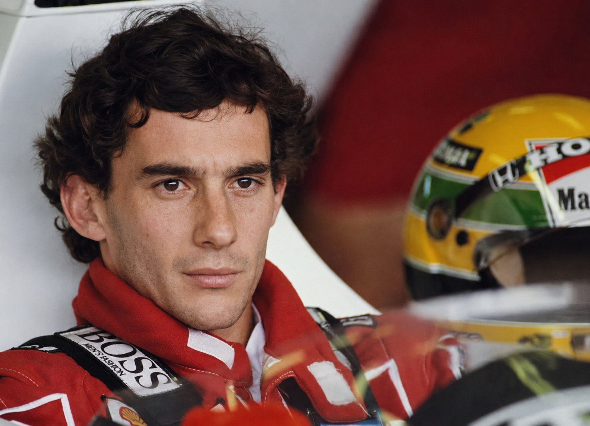
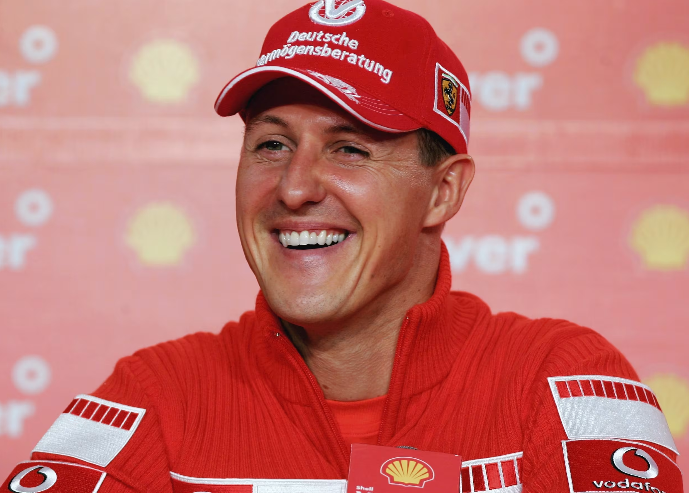
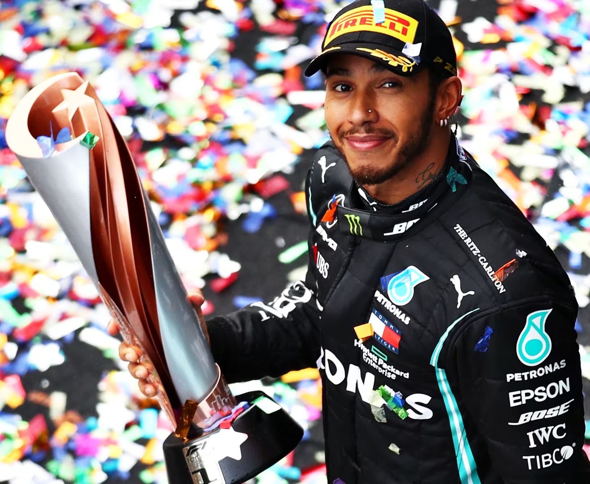
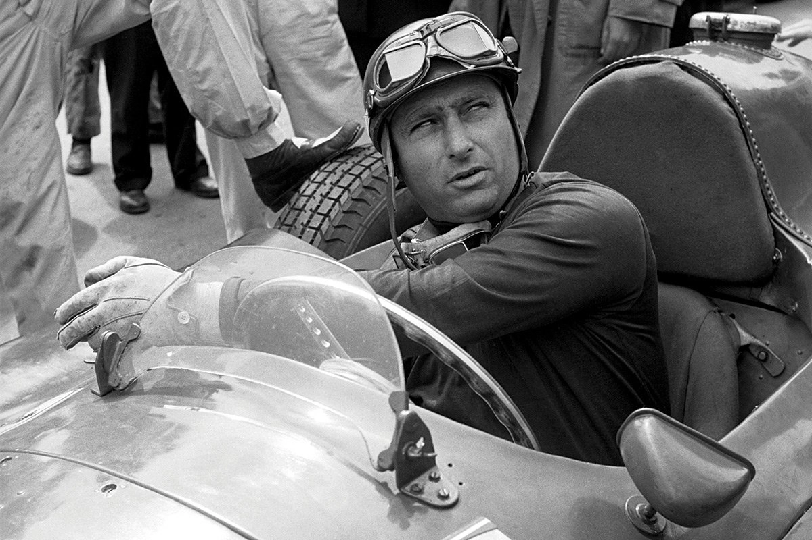
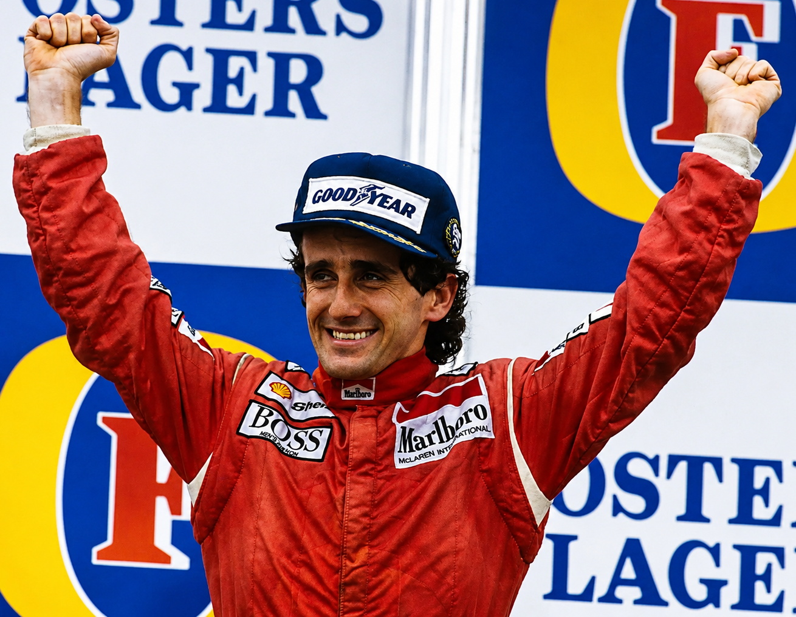
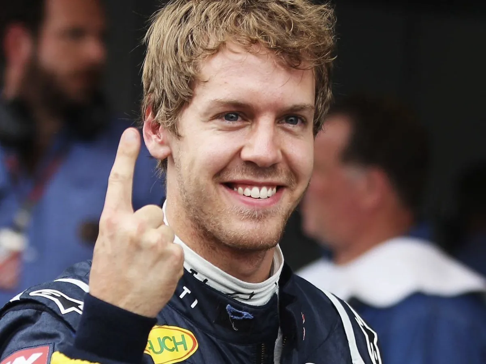
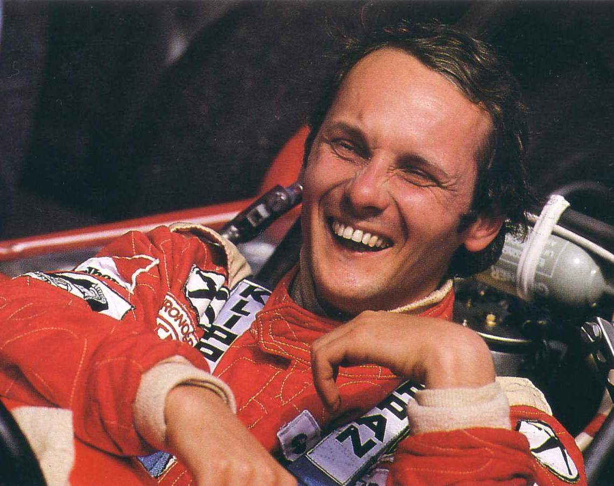
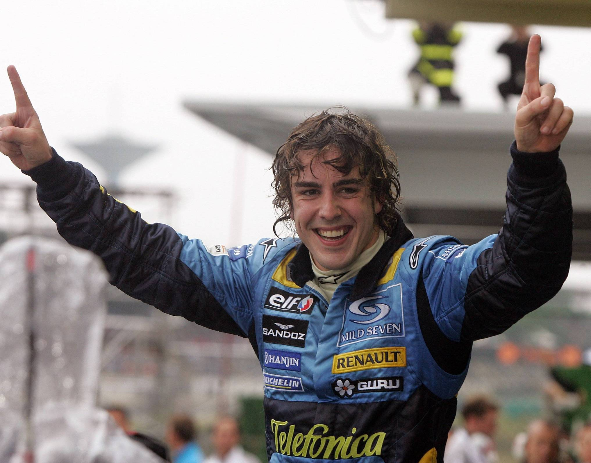
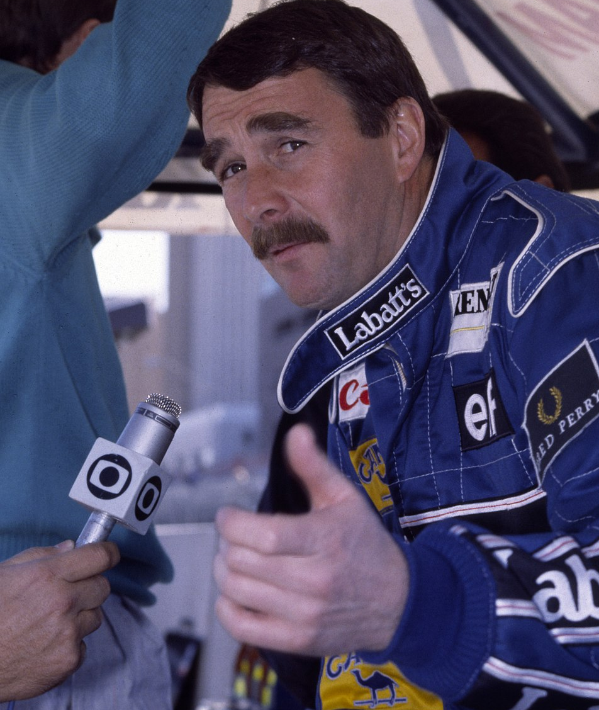

- Home
- Categoria
- Equipes
- Icones
- Quiz
- Perfil

Ayrton Senna da Silva foi um automobilista brasileiro nascido em 21 de março de 1960, em São Paulo. Considerado um dos maiores pilotos da história da Fórmula 1, Senna conquistou três títulos mundiais pela McLaren nos anos de 1988, 1990 e 1991. Conhecido por sua velocidade em voltas de classificação, habilidade na chuva e estilo agressivo de pilotagem, tornou-se um dos maiores ídolos do esporte mundial e um símbolo nacional no Brasil.
Senna iniciou sua carreira no kart ainda na infância, incentivado pelo pai, Milton da Silva. Após conquistar títulos importantes no kartismo, mudou-se para a Europa para competir em categorias de base. Foi campeão da Fórmula Ford 1600, Fórmula Ford 2000 e Fórmula 3 Inglesa, resultados que abriram caminho para sua entrada na Fórmula 1 em 1984 pela equipe Toleman.
Logo em sua temporada de estreia, chamou atenção ao conquistar um histórico segundo lugar no Grande Prêmio de Mônaco, disputado sob forte chuva. Em 1985 transferiu-se para a Lotus, equipe pela qual conquistou suas primeiras vitórias e poles positions. Seu desempenho consolidou sua reputação como um dos pilotos mais rápidos da categoria.
Em 1988, Senna ingressou na McLaren e passou a formar dupla com o francês Alain Prost, iniciando uma das maiores rivalidades da história da Fórmula 1. Naquele ano conquistou seu primeiro campeonato mundial, vencendo oito corridas. A disputa entre os dois pilotos se intensificou nas temporadas seguintes, marcada por acidentes e polêmicas, especialmente nos GPs do Japão de 1989 e 1990.
Além da velocidade, Senna era admirado por sua determinação, disciplina e dedicação extrema ao automobilismo. Também se destacava em pistas molhadas, protagonizando performances históricas, como no GP da Europa de 1993, em Donington Park, considerado uma das maiores voltas iniciais da história da Fórmula 1.
Após deixar a McLaren, Senna assinou com a Williams para a temporada de 1994. No entanto, o início daquele campeonato foi difícil devido às mudanças técnicas nos carros. Em 1º de maio de 1994, durante o Grande Prêmio de San Marino, em Ímola, na Itália, Senna sofreu um grave acidente na curva Tamburello. O piloto não resistiu aos ferimentos e morreu aos 34 anos.
Sua morte causou enorme comoção mundial, especialmente no Brasil, onde milhões de pessoas acompanharam seu funeral. O acidente também marcou profundamente a Fórmula 1, levando a grandes mudanças nas regras de segurança da categoria. Fora das pistas,
Ayrton Senna também ficou conhecido por seu lado humanitário e pela forte religiosidade.
Após sua morte, foi criado o Instituto Ayrton Senna, organização dedicada à educação de crianças e jovens brasileiros. Até hoje, Senna permanece como um dos maiores
nomes da história do automobilismo e um dos atletas brasileiros mais admirados de todos os tempos e é considerado por muitos um herói nacional.

Michael Schumacher é um ex-automobilista alemão e um dos maiores pilotos da história da Fórmula 1. Nascido em 3 de janeiro de 1969, em Hürth, na Alemanha Ocidental, Schumacher conquistou sete títulos mundiais de Fórmula 1, sendo campeão em 1994, 1995, 2000, 2001, 2002, 2003 e 2004. Durante muitos anos, foi o maior campeão da categoria, recorde posteriormente igualado por Lewis Hamilton.
Conhecido pelo apelido “Schumi”, Michael iniciou sua carreira no kart ainda criança, incentivado por seu pai, que administrava um kartódromo em Kerpen. Seu talento rapidamente chamou atenção nas categorias de base, passando pela Fórmula Ford, Fórmula 3 e competições de protótipos até chegar à Fórmula 1 em 1991, estreando pela Jordan no GP da Bélgica. Após apenas uma corrida, foi contratado pela Benetton, equipe onde conquistou seus dois primeiros títulos mundiais.
Em 1996, Schumacher transferiu-se para a Ferrari com a missão de recolocar a equipe italiana no topo da Fórmula 1. Após alguns anos de reconstrução, liderou uma das maiores eras de domínio da história da categoria, conquistando cinco títulos consecutivos entre 2000 e 2004. Nesse período, tornou-se referência por sua velocidade, regularidade, preparo físico e capacidade técnica no desenvolvimento dos carros.
Ao longo da carreira, Schumacher acumulou 91 vitórias, 68 pole positions, 155 pódios e 308 Grandes Prêmios disputados. Também ficou marcado por rivalidades intensas e episódios polêmicos, como os incidentes com Damon Hill em 1994 e Jacques Villeneuve em 1997, além das ordens de equipe envolvendo Rubens Barrichello na Ferrari.
Após se aposentar em 2006, Schumacher retornou à Fórmula 1 em 2010 pela Mercedes. Apesar de não repetir os resultados do auge da carreira, teve papel importante no desenvolvimento da equipe que posteriormente dominaria a era híbrida da categoria. Seu último pódio aconteceu no GP da Europa de 2012, e sua despedida definitiva ocorreu no GP do Brasil do mesmo ano.
Em dezembro de 2013, Michael Schumacher sofreu um grave acidente de esqui nos Alpes Franceses, causando um traumatismo craniano severo. Desde então, sua família mantém seu estado de saúde em sigilo, divulgando poucas informações públicas. Mesmo afastado da vida pública, Schumacher continua sendo uma das figuras mais importantes e influentes da história do automobilismo mundial.

Lewis Hamilton é um automobilista britânico nascido em 7 de janeiro de 1985, em Stevenage, Inglaterra. Considerado um dos maiores pilotos da história da Fórmula 1, Hamilton é heptacampeão mundial da categoria, dividindo o recorde de títulos com Michael Schumacher. Ao longo da carreira, tornou-se referência por sua velocidade, consistência e impacto dentro e fora das pistas.
Hamilton iniciou sua trajetória no automobilismo ainda criança, competindo no kart. Seu talento chamou atenção rapidamente, levando-o a integrar o programa de desenvolvimento de pilotos da McLaren ainda jovem. Após conquistar títulos em categorias de base como Fórmula Renault, Fórmula 3 Euro Series e GP2 Series, estreou na Fórmula 1 em 2007 pela própria McLaren.
Logo em sua temporada de estreia, surpreendeu o mundo ao disputar o título até a última corrida contra Kimi Räikkönen. Em 2008 conquistou seu primeiro campeonato mundial de Fórmula 1, tornando-se na época o campeão mais jovem da história da categoria.
Após anos competitivos na McLaren, Hamilton transferiu-se para a Mercedes-Benz em 2013. A decisão inicialmente foi questionada, mas acabou marcando o início de uma das eras mais dominantes da Fórmula 1. Entre 2014 e 2020 conquistou seis títulos mundiais, estabelecendo diversos recordes, incluindo maior número de vitórias, poles positions e pódios da categoria.
Durante esse período, viveu rivalidades importantes com pilotos como Nico Rosberg, Sebastian Vettel e Max Verstappen. A disputa de 2021 contra Verstappen foi uma das mais intensas da história recente da Fórmula 1, decidida apenas na última volta da última corrida da temporada.
Além do automobilismo, Hamilton tornou-se uma figura influente em questões sociais e ambientais. O piloto frequentemente se posiciona contra o racismo, defende maior diversidade no esporte e apoia causas ligadas à sustentabilidade e aos direitos humanos. Também recebeu o título de cavaleiro da monarquia britânica, passando a ser conhecido oficialmente como Sir Lewis Hamilton.
Em 2024, foi anunciada sua transferência para a Ferrari, marcando um dos movimentos mais impactantes da história recente da categoria.

Juan Manuel Fangio foi um automobilista argentino nascido em 24 de junho de 1911, em Balcarce, Argentina. É amplamente considerado um dos maiores pilotos da história da Fórmula 1 e um dos principais responsáveis pela popularização da categoria em seus primeiros anos. Fangio conquistou cinco títulos mundiais de Fórmula 1 entre 1951 e 1957, marca que permaneceu como recorde absoluto por mais de 40 anos.
Antes de competir internacionalmente, Fangio disputava corridas de longa duração na Argentina, conhecidas por serem extremamente difíceis e perigosas. Seu talento rapidamente chamou atenção, permitindo sua entrada no automobilismo europeu. Em 1950, participou da primeira temporada oficial da Fórmula 1 e logo tornou-se um dos pilotos mais dominantes da categoria.
Ao longo da carreira, Fangio pilotou por equipes históricas como Alfa Romeo, Maserati, Mercedes-Benz e Ferrari. Ficou conhecido por conquistar títulos com diferentes equipes, algo extremamente raro na época e que demonstrava sua enorme capacidade de adaptação.
Seu estilo de pilotagem era marcado pela inteligência estratégica, precisão e controle do carro, especialmente em uma era em que as corridas eram muito perigosas e os carros pouco seguros. Fangio também era admirado pela calma sob pressão e pela habilidade de preservar o equipamento durante provas longas.
Um dos momentos mais famosos de sua carreira aconteceu no Grande Prêmio da Alemanha de 1957, em Nürburgring. Após um pit stop problemático, Fangio realizou uma recuperação histórica, quebrando recordes de volta e ultrapassando seus adversários para conquistar uma das vitórias mais emblemáticas da história da Fórmula 1.
Fangio aposentou-se em 1958, aos 47 anos, sendo reconhecido mundialmente como uma lenda do automobilismo. Seu legado permanece como referência até hoje, influenciando gerações de pilotos e consolidando seu nome entre os maiores esportistas da história.

Alain Prost é um ex-automobilista francês nascido em 24 de fevereiro de 1955, em Lorette, França. Considerado um dos maiores pilotos da história da Fórmula 1, Prost conquistou quatro títulos mundiais nos anos de 1985, 1986, 1989 e 1993. Ficou conhecido pelo estilo de pilotagem extremamente inteligente e calculista, o que lhe rendeu o apelido de “O Professor”.
Prost iniciou sua carreira no kart ainda adolescente e rapidamente destacou-se nas categorias de base do automobilismo europeu. Após conquistar títulos importantes na Fórmula Renault e Fórmula 3, estreou na Fórmula 1 em 1980 pela McLaren. Seu talento logo chamou atenção, principalmente pela consistência e capacidade técnica.
Durante os anos 1980, Prost tornou-se um dos pilotos mais dominantes da categoria. Passou por equipes históricas como Renault, Ferrari e Williams, mas foi na McLaren que viveu seus anos mais marcantes.
Sua rivalidade com Ayrton Senna tornou-se uma das mais intensas e famosas da história do esporte. Companheiros de equipe na McLaren entre 1988 e 1989, os dois protagonizaram disputas históricas dentro e fora das pistas, marcadas por acidentes, polêmicas e batalhas pelo campeonato mundial. Os confrontos nos GPs do Japão de 1989 e 1990 ficaram eternizados na história da Fórmula 1.
Ao contrário de pilotos mais agressivos, Prost era conhecido por sua pilotagem suave, estratégia de corrida e inteligência tática. Seu foco estava em administrar pneus, combustível e equipamento ao máximo, explorando cada detalhe da corrida. Essa abordagem fez dele um dos pilotos mais eficientes e vitoriosos de sua geração.
Em 1993, pilotando pela Williams, Prost conquistou seu quarto título mundial e aposentou-se da Fórmula 1 ao final da temporada. Na época, era o piloto com maior número de vitórias da história da categoria. Após encerrar a carreira, Prost continuou ligado ao automobilismo, trabalhando como comentarista, consultor e dono de equipe. Seu legado permanece como um dos mais importantes da Fórmula 1, sendo lembrado pela inteligência, regularidade e enorme capacidade técnica dentro das pistas.

Sebastian Vettel é um ex-automobilista alemão nascido em 3 de julho de 1987, em Heppenheim, Alemanha. Considerado um dos principais pilotos de sua geração, Vettel conquistou quatro títulos mundiais consecutivos de Fórmula 1 entre 2010 e 2013, pilotando pela Red Bull Racing. Durante esse período, tornou-se um dos pilotos mais dominantes da história da categoria.
Vettel iniciou sua carreira no kart ainda criança e rapidamente destacou-se nas categorias de base do automobilismo. Integrando o programa de jovens pilotos da Red Bull, avançou rapidamente até estrear na Fórmula 1 em 2007 pela BMW Sauber, substituindo Robert Kubica em uma corrida. Ainda naquele ano transferiu-se para a equipe Toro Rosso, onde começou a chamar atenção pelo desempenho acima do esperado.
Em 2008, Vettel conquistou sua primeira vitória no Grande Prêmio da Itália, em Monza, tornando-se na época o piloto mais jovem da história a vencer uma corrida de Fórmula 1. O resultado consolidou sua reputação como uma das maiores promessas do esporte.
Promovido à Red Bull em 2009, Vettel passou a disputar títulos mundiais. Em 2010 conquistou seu primeiro campeonato após uma temporada extremamente equilibrada, tornando-se o campeão mundial mais jovem da história naquele momento. Nos anos seguintes, dominou a Fórmula 1 ao lado da Red Bull, acumulando vitórias, poles positions e recordes.
Após o fim do domínio da equipe austríaca, Vettel transferiu-se para a Ferrari em 2015, buscando repetir o sucesso de Michael Schumacher. Apesar de conquistar vitórias e disputar campeonatos contra Lewis Hamilton, não conseguiu alcançar um título com a equipe italiana.
Nos últimos anos da carreira, Vettel correu pela Aston Martin até anunciar sua aposentadoria ao final da temporada de 2022. Além do talento nas pistas, passou a ser muito reconhecido por seu posicionamento em questões ambientais, sociais e de direitos humanos. Vettel encerrou sua trajetória na Fórmula 1 como um dos pilotos mais vitoriosos da história, admirado tanto pela velocidade quanto pela personalidade respeitada dentro do paddock.

Niki Lauda foi um automobilista austríaco nascido em 22 de fevereiro de 1949, em Viena, Áustria. Considerado um dos maiores pilotos da história da Fórmula 1, Lauda conquistou três títulos mundiais nos anos de 1975, 1977 e 1984. Ficou conhecido pela inteligência, disciplina e enorme capacidade de superação, tornando-se uma das figuras mais respeitadas do automobilismo.
Lauda iniciou sua carreira enfrentando dificuldades financeiras e falta de apoio da família, chegando a fazer empréstimos para conseguir competir. Após se destacar em categorias menores, estreou na Fórmula 1 no início da década de 1970. Seu talento chamou atenção rapidamente, especialmente por sua habilidade técnica no desenvolvimento dos carros.
Em 1974, transferiu-se para a Ferrari, equipe onde viveu os primeiros grandes momentos da carreira. Ao lado da Ferrari, Lauda ajudou a transformar a competitividade da equipe e conquistou seu primeiro título mundial em 1975. No ano seguinte, protagonizou um dos episódios mais marcantes da história da Fórmula 1.
Durante o Grande Prêmio da Alemanha de 1976, realizado em Nürburgring, Lauda sofreu um gravíssimo acidente. Seu carro pegou fogo após bater contra a barreira, deixando o piloto preso entre as chamas por vários segundos. Ele sofreu queimaduras severas no rosto e nos pulmões, chegando a correr risco de morte. Mesmo assim, apenas semanas depois, retornou às pistas de forma impressionante, ainda em recuperação.
A temporada de 1976 também ficou marcada pela intensa rivalidade com James Hunt, disputa que se tornou uma das mais famosas da história do esporte. Hunt acabou conquistando o título daquele ano por apenas um ponto de diferença.
Lauda voltou a ser campeão em 1977 pela Ferrari antes de deixar a equipe italiana. Após uma primeira aposentadoria, retornou à Fórmula 1 nos anos 1980 pela McLaren. Em 1984 conquistou seu terceiro título mundial, vencendo o companheiro de equipe Alain Prost por apenas meio ponto, na menor diferença da história dos campeonatos da Fórmula 1.
Depois de encerrar definitivamente sua carreira como piloto, Lauda continuou ligado ao automobilismo como empresário, comentarista e dirigente de equipes. Também teve grande importância no sucesso recente da Mercedes-Benz, atuando como dirigente e ajudando na contratação de Lewis Hamilton. Niki Lauda faleceu em 20 de maio de 2019, aos 70 anos. Seu legado permanece como símbolo de coragem, determinação e paixão pelo automobilismo.

Fernando Alonso é um automobilista espanhol nascido em 29 de julho de 1981, em Oviedo, Espanha. Considerado um dos pilotos mais talentosos e completos da história da Fórmula 1, Alonso conquistou dois títulos mundiais consecutivos nos anos de 2005 e 2006 pela Renault. Ficou conhecido pela agressividade controlada, inteligência estratégica e enorme capacidade de extrair desempenho do carro.
Alonso começou no kart ainda criança e rapidamente destacou-se nas categorias de base do automobilismo europeu. Estreou na Fórmula 1 em 2001 pela equipe Minardi e, pouco tempo depois, passou a integrar oficialmente a Renault. Seu crescimento foi rápido, tornando-se um dos principais nomes da nova geração de pilotos da época.
Em 2005, Alonso encerrou a longa sequência de títulos de Michael Schumacher ao conquistar seu primeiro campeonato mundial. No ano seguinte repetiu o feito em uma disputa intensa contra Schumacher, consolidando-se como um dos grandes pilotos da categoria e tornando-se o mais jovem bicampeão da história naquele momento.
Após o sucesso na Renault, Alonso teve passagens por equipes como McLaren, Ferrari e Aston Martin. Na Ferrari, entre 2010 e 2014, ficou muito próximo de conquistar novos títulos, especialmente nas temporadas de 2010 e 2012, quando perdeu o campeonato apenas na etapa final.
Ao longo da carreira, Alonso ganhou fama por sua habilidade em ultrapassagens, desempenho consistente e capacidade de competir em alto nível mesmo com carros inferiores aos dos adversários. Também ficou conhecido pela forte personalidade e pelas rivalidades com pilotos como Lewis Hamilton, Sebastian Vettel e Schumacher.
Além da Fórmula 1, Alonso participou de outras categorias importantes do automobilismo. Venceu as 24 Horas de Le Mans em duas ocasiões e conquistou o Campeonato Mundial de Endurance da FIA, demonstrando versatilidade em diferentes tipos de corrida.
Após uma breve aposentadoria da Fórmula 1 entre 2019 e 2020, Alonso retornou à categoria em 2021 e continuou competindo em alto nível, tornando-se um dos pilotos mais experientes e respeitados do grid. Seu legado é marcado pela velocidade, inteligência e longevidade no automobilismo.

Nigel Mansell é um ex-automobilista britânico nascido em 8 de agosto de 1953, em Upton-upon-Severn, Inglaterra. Considerado um dos pilotos mais carismáticos e agressivos da história da Fórmula 1, Mansell conquistou o campeonato mundial de 1992 pilotando pela Williams. Ficou conhecido por seu estilo extremamente competitivo, velocidade em corridas e personalidade determinada.
Mansell iniciou sua carreira no automobilismo enfrentando dificuldades financeiras e pouca confiança de equipes maiores. Após se destacar nas categorias de base britânicas, estreou na Fórmula 1 em 1980 pela equipe Lotus. Durante os anos seguintes, começou a ganhar notoriedade por suas atuações agressivas e pela capacidade de pilotar no limite.
Na Lotus, trabalhou ao lado de Ayrton Senna e chamou atenção por sua velocidade, embora também sofresse com problemas mecânicos e acidentes frequentes. Mais tarde transferiu-se para a Williams, equipe onde viveu os melhores anos da carreira.
Durante a segunda metade da década de 1980, Mansell protagonizou disputas marcantes contra pilotos como Alain Prost, Nelson Piquet e Senna. Em 1986 perdeu o título mundial de forma dramática após um estouro de pneu na última corrida da temporada, quando liderava o campeonato.
Seu grande momento finalmente chegou em 1992. Pilotando o dominante Williams FW14B, Mansell venceu nove corridas e conquistou o título mundial com ampla vantagem, tornando-se campeão de maneira histórica. Seu estilo agressivo e suas ultrapassagens espetaculares fizeram dele um dos pilotos mais populares entre os fãs da Fórmula 1.
Após deixar a Fórmula 1 temporariamente, Mansell também conquistou o campeonato da IndyCar Series em 1993, tornando-se um dos poucos pilotos a vencer títulos importantes tanto na Fórmula 1 quanto no automobilismo americano.
Nigel Mansell aposentou-se definitivamente da Fórmula 1 em 1995. Até hoje é lembrado como um dos pilotos mais emocionantes de sua geração, admirado pela coragem, velocidade e determinação dentro das pistas.
